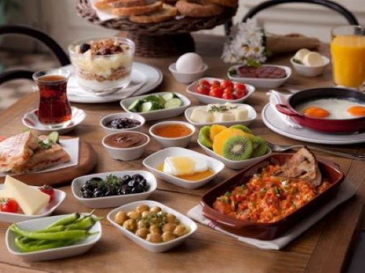

Турецкий завтрак

Его состав
Традиционный турецкий завтрак включает в себя сыр (обычно белый сыр), помидоры, маслины, хлеб с медом или джемом, колбасу, салями, пастрами и вареные яйца, а также черный чай в стакане с тонкой талией.
Название документа